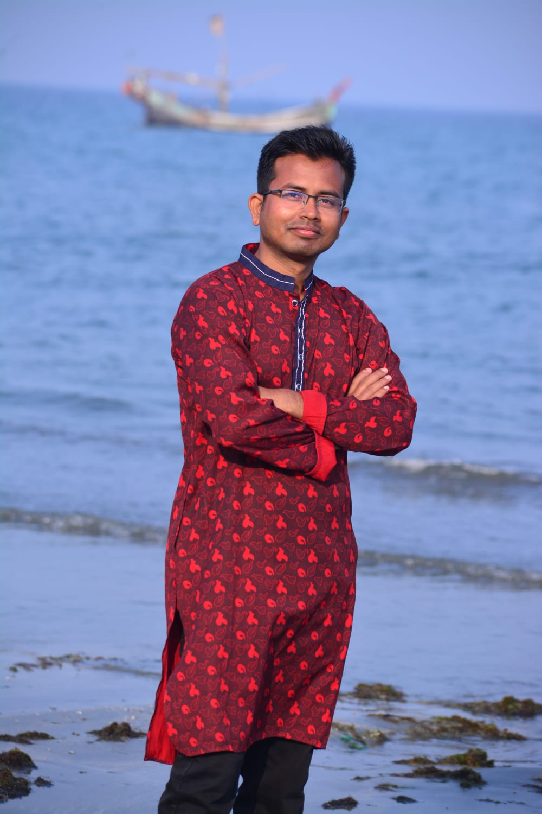
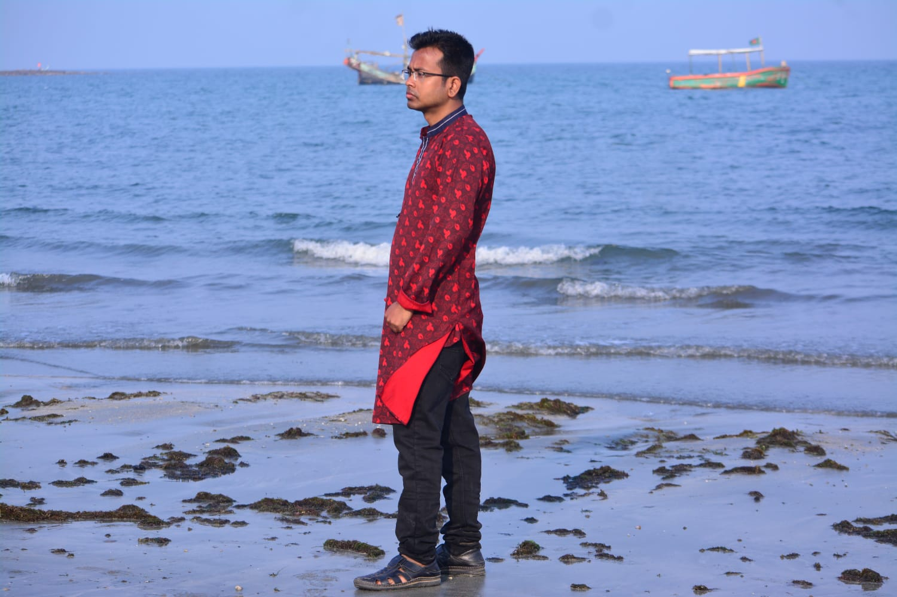

Baharul Islam


Professional Summary
Aspiring mathematician with a solid foundation in analytical and computational mathematics, currently completing M.Sc. in Applied Mathematics. Strong interest in applying mathematical theories to solve real-world problems in science and engineering. Highly adaptable, detail-oriented, and driven to contribute meaningfully to academic and research environments.
Education
- M.Sc. in Applied Mathematics (Expected 2025)
Bangabandhu Sheikh Mujibur Rahman Science & Technology University, Gopalganj
Courses: Relativity, Fluid Dynamics, Fourier & Wavelets, Industrial Math - B.Sc. (Hons.) in Mathematics (2024) | CGPA: 3.26 / 4.00
Bangabandhu Sheikh Mujibur Rahman Science & Technology University, Gopalganj
Courses: Linear Algebra, Differential Equations, Real/Complex Analysis, MATLAB, Numerical Methods - Minor: C/C++, DBMS, Accounting, Economics, Statistics
Thesis: Analytical and Numerical Modeling of Relapsing-Remitting Multiple Sclerosis - H.S.C. in Science (2018) | GPA: 4.72 / 5.00
Basundia School and College, Jashore Board
Technical Skills
- Programming: MATLAB, FORTRAN, C/C++, SQL
- Software: MS Office Suite, Adobe Photoshop, MAPLE
- Platforms: Windows, Linux
- IT Skills: Troubleshooting, Internet Research, Data Analysis
Languages
- Bengali – Native
- English – Working Proficiency
- Hindi – Intermediate
Awards & Achievements
- Government scholarships in PSC and JSC examinations
- Recognized for outstanding attendance and discipline in school
Personal Attributes
- Strong analytical thinking
- Excellent team collaboration and leadership
- Adaptable and creative mindset
- Effective communication and time management
Research Publications
Baharul Islam, Sabina Yeasmin, Monazat Ali, Md. Ali Akber Rony, Dr. Dipankar Kumar (Corresponding Author).
"Analytical Simulation of a β-Derivative Multiple Sclerosis Model: Insights into Fractional Dynamics and Disease Progression."
Submitted to Partial Differential Equations in Applied Mathematics, Elsevier. Manuscript Number: PADIFF-D-25-00325.
References
-
Dr. Dipankar Kumar
Associate Professor, Dept. of Mathematics, BSMRSTU
📞 +8801722285442 | ✉️ dks.bsmrstu@gmail.com -
Dr. Md. Shuzon Ali
Assistant Professor, Dept. of Mathematics, BSMRSTU
📞 +8801332770751 | ✉️ sali_4222@bsmrstu.edu.bd